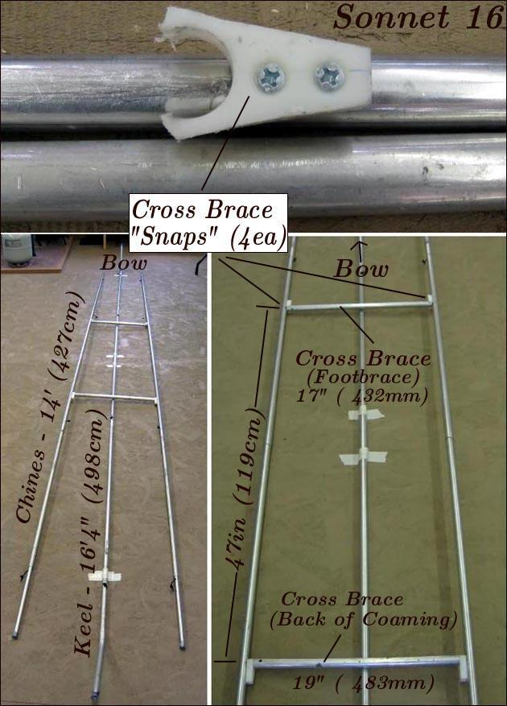

| Sonnet 16 ( Stringer Length / Cross Brace Location) | Menu Previous Page Next Page |
|

Stringer Length - The Sonnet 16 stringer lengths stated above are approximate as each boat will differ slightly. The keel length will be determined when the keel is constructed on the skinning frame. The side stringer (chines) length will be determined when they are fitted between the sponsons. Make the side stringers a couple of inches longer on each end initially, and cut them later to the correct final length. All three stringers use 4ea X 36" sections, with the additional end sections being of variable length. The "Sleeve Pocket" Link will provide additional guidance. Use the {Back} key to return. (Continued below)
Cross Brace Location - The rear 19" (483mm ) cross brace tube is located at the back of coaming location that is determined by the location of skinning frame station 4. The front 17" (432mm) cross brace tube location / length will differ depending on the footbrace location determined by each builder. The farther forward the tube, the shorter it will be. In the pic above, the span between cross braces was determined to be 47" based on "my" footbrace location. The 4 HDPE snaps that connect the cross braces to the side stringers are located at these same positions on the side stringers. |
|